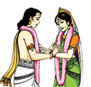

 Vaikhanasa Matrimony
Dear Vaikhanasa Bhandhu,
We are glad to announce the formation of Sri Vaikhnasa Vivaha Samachara Kendram as a part of Sri Vaikhanasa Maha Mandali activities, that is intended to facilitate the matrimonial selection amongst our Vaikhanasas seeking marriage alliances.
In this direction Sri Vaikhanasa Vivaha Samachara Kendram will be organizing Vivaha Parichaya Vedika's that will be informed timely on when and where they will be arranged. Please check the news page for the events to be organized by this samachara kendram.
Procedure for Participation in the Program:
| 1. | Participation in the Paricheya Vedika is by Registration only. |
| 2. | Download the application form here or please find the PDF below to go through and download from there as well by clicking the save icon above PDF file. |
| 3. | Send the filled application attached with bio-data and photo of the bride groom or bride along with Registration fee of RS 100 to Shriman. P. Gopala Krishna garu |
| 4. | Visit the Paricheya Vedika and pay participation fee of Rs 500. |
| 5. | Information about available prospective Bride grooms and Brides along with their details will be shared with the participants |
For details Contact details
| Name | Designation | Mobile | ||
| 1. | P. Gopala Krishna | Convener | 9290492262 | peddinti.krishna1956@gmail.com |
| 2. | T. Vikhanasa Charyulu | Chief Advisor | 9885304787 | vikhanasacharyulu@gmail.com |
6th Vivaha Paricheya Vedika will be held at 1pm on 24/Dec/2017(Sunday) at Sri Vikhanasa Ashramam, Plotno.205, Road No.2, P&T colony, Kakatiya Hospital road, Medipally, Hyderabad. All the applicants need to send in their details before hand to P.Gopala Krishna garu or T.Vikhanasa Charyulu garu (phone number and email are available above)
Details of all the paricheya vedikas conducted till now
1. First of this parichaya vedika is being arranged at our Ashramam building in the month of Feb-2016, please utilise the opportunity.
2. Second vivaha paricheya vedika by Sri Vaikhanasa Vivaha Samachara Kendram was held on 08/May/2016 at Sri Vaikhanasa Ashramam, Hyderabad.
3. After receiving the tremendous response as part of the first and second vivaha paricheya vedika's, Sri Vaikhanasa Vivaha Samachara Kendram is filled with more enthusiasm to organize its third paricheya vedika on 24/July/2016 at Sri VenuGopalaSwamy Temple, Rajahmundry with the help of Rajahmundry Vaikhanasa Society.
4. 4th Vivaha Paricheya Vedika was held on 29/Jan/2017 at Sri Vikhanasa Ashramam, Plotno.205, Road No.2, P&T colony, Kakatiya Hospital road, Medipally, Hyderabad.
5. 5th Vivaha Paricheya Vedika was held on 30/Apr/2017 at Sri Vikhanasa Ashramam, Plotno.205, Road No.2, P&T colony, Kakatiya Hospital road, Medipally, Hyderabad.